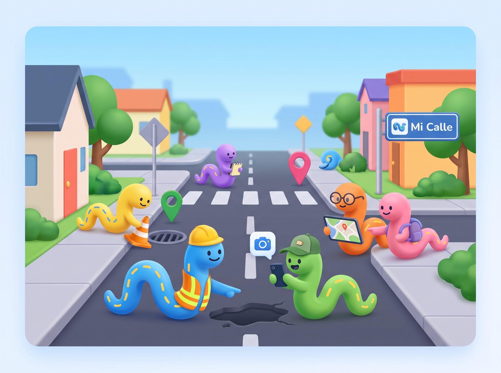
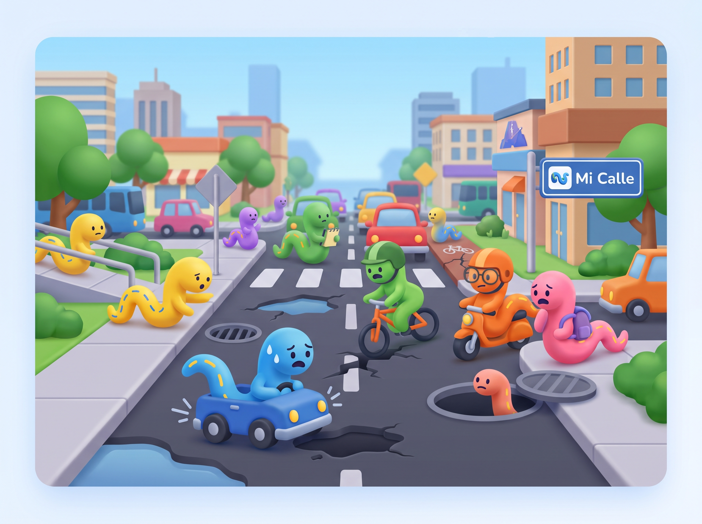

Reporta daños viales. Juntos mejoramos la ciudad.
Mi Calle es el portal ciudadano que te permite reportar huecos, grietas, alcantarillas sin tapa y otros daños de infraestructura vial con fotos, ubicación y descripción — directamente desde tu celular o computador.


El problema que queremos resolver
Bogotá presenta un alto flujo diario de peatones, ciclistas, motociclistas y vehículos particulares, lo que genera un desgaste constante de la infraestructura vial. Como resultado, es frecuente encontrar huecos, grietas, hundimientos, alcantarillas sin tapa y otros daños que afectan la movilidad y aumentan el riesgo de accidentes.
Aunque existen mecanismos institucionales para reportar estas situaciones, muchos ciudadanos desconocen su funcionamiento, requieren múltiples pasos o no ofrecen un seguimiento claro del estado de la solicitud. Esto ocasiona que numerosos daños permanezcan sin reportarse o que la información se disperse entre diferentes canales, dificultando una respuesta organizada por parte de las entidades responsables.
¿Cómo funciona?
Tres pasos simples para que tu reporte llegue a quienes deben actuar.
-
Paso 01
Detecta el daño
Encuentra un hueco, grieta, alcantarilla sin tapa u otro problema en la vía.
-
Paso 02
Toma una foto y describe
Captura una imagen, agrega una descripción breve y confirma tu ubicación georreferenciada.
-
Paso 03
Haz seguimiento
Recibe actualizaciones del estado de tu reporte hasta que el daño sea reparado.
Quién usa Mi Calle
La plataforma está diseñada para cualquier ciudadano y para las entidades responsables de mantener la infraestructura vial.
-
Conductor
Identifica un hueco que representa riesgo para los vehículos y lo reporta desde el auto en segundos.
-
Peatón
Encuentra una alcantarilla sin tapa durante su recorrido y alerta a la comunidad antes de que cause un accidente.
-
Ciclista
Reporta una grieta peligrosa en la ciclorruta para proteger a otros usuarios de la vía.
-
Administrador
Revisa los nuevos reportes, prioriza la atención y actualiza el estado de cada caso conforme avanza el proceso.
Sé parte del cambio.
Reporta hoy.
Cada reporte cuenta. Tu participación ayuda a que Bogotá tenga calles más seguras y mejor mantenidas para todos.
Hacer mi primer reporte